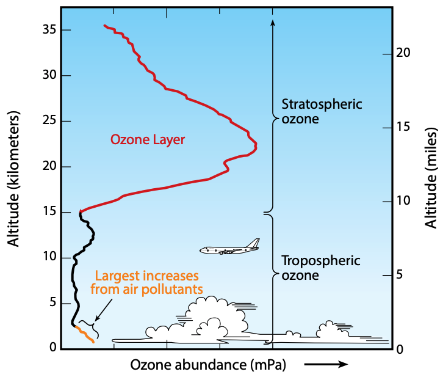

BOCS is a numerical modelling tool integrating a large number of atmospheric chemical reactions, which ultimately lead to the existence and depletion of the stratospheric ozone layer (Figure 1). It is designed for undergraduate teaching at universities. At the University of East Anglia (UEA), the tool is used in the second-year module ENV-5015A Atmospheric Chemistry and Global Change. Here, I summarize the reactions considered in BOCS at the moment. Of course, how important each reaction is will depend to a large degree on the initialization settings of each individual model run. Specifically, the user is able to independenly modify all initial concentrations of the chemical species involved, which will then react with each other according to tabulated chemical rate constants
k and photolysis rates
j. These chemical reaction dependencies in turn depend on environmental conditions such as temperature, pressure, and sunlight (latitude, time of year). Therefore, these physical variables pose additional input data. Currently, BOCS assumes the diurnal cycle for zero degrees longitude, i.e. the time of day does not need to be set by the user. The reaction constants were obtained from
IUPAC and from the chemical kinetics and photochemical data sheets of the
NASA Jet Propulsion Laboratory. Note that BOCS does not consider the transport of chemical species. Consequently, it can only be used to study the effect of in-situ chemical reactions on ozone and related chemical species.
The sections below go point-by-point through the chemical reactions included in the current BOCS mechanism. UEA students will recognize these reactions from the stratospheric chemistry lectures of ENV-5015A. Other readers, I may refer to e.g. Wayne (2000) or Jacob (2000), see
reference list.
Chapman reactions
First of all, we of course consider the chemical reactions that lead to the relatively high ozone concentrations in the stratosphere, without which life on Earth would be impossible in its present form. Sydney Chapman (1888-1970) was the first to chemically explain the presence of the greater abundance of ozone in the stratosphere than in the troposphere. The reaction cycle is also known as the Chapman mechanism:

Figure 1. Vertical profile of the ozone layer, representative of tropical latitudes. Source: UNEP.
\[ \begin{align}
\text{O}_2 + h\nu &\rightarrow 2\hspace{0.1cm}\text{O}\hspace{0.5cm}(j_1\hspace{0.1cm}{\small ; \lambda < 240\hspace{0.1cm}\text{nm}})\hspace{1cm}&\text{(1)}\\
\text{O} + \text{O}_2 + \text{M} &\rightarrow \text{O}_3 + \text{M}\hspace{0.5cm}(k_2)\hspace{1cm}&\text{(2)}\\
\text{O}_3 + h\nu &\rightarrow \text{O}_2 + \text{O($^1$D)}\hspace{0.5cm}(j_3\hspace{0.1cm}{\small ; \lambda < 320\hspace{0.1cm}\text{nm}})\hspace{1cm}&\text{(3a)}\\
\text{O($^1$D)} + \text{M} &\rightarrow \text{O($^3$P)} + \text{M}\hspace{0.5cm}(k_3)\hspace{1cm}&\text{(3b)}\\
\text{O}_3 + \text{O} &\rightarrow 2\hspace{0.1cm}\text{O}_2\hspace{0.5cm}(k_4)\hspace{1cm}&\text{(4)}
\end{align}
\]
Due to the availability of high frequency sunlight in the stratosphere, reaction (1) is a large source of odd oxygen (and thus ozone) in the stratosphere. Chapman first suggested this central mechanism at a conference in 1929. As a result of these reactions, the stratospheric ozone layer has a characteristic altitude profile (Figure 1), resulting from competing effects of increasing air density and smaller availability of high energy photons with decreasing altitude. In addition, the altitude-dependence of a number of catalytic ozone depletion cycles plays a key role in shaping the stratospheric ozone profile (details below). Since reaction (3) becomes slower (fewer high energy photons available) ozone becomes increasingly long-lived at lower altitudes. In the lower stratosphere and at high latitudes ozone can thus be transported over long distances, as evident from the bending of ozone mixing ratio contour lines in those regions of the atmosphere (Figure 2).
Catalytic ozone loss cycles through NOx, HOx, ClOx, and BrOx
It was soon realized (1950s) that the Chapman mechanism on its own cannot explain stratospheric ozone chemistry sufficiently. Indeed, the Chapman cycle suggests only one odd oxygen loss mechanism via reaction (4), which compared to observed values leads to a significant overestimate of stratospheric ozone concentrations. This led to the discovery of the following important catalytic cycles that deplete odd oxygen and, consequently, ozone. Many of these catalytic cycles share a common scheme:
Figure 2. Zonal mean ozone volume mixing ratios as estimated by a UK climate model run under pre-industrial conditions. Note the downwards bending of the contour lines, especially at high latitudes and in the lower stratosphere. For a detailed explanation of stratospheric transport mechanisms, see e.g. Plumb (2002).
\[ \begin{align}
\text{X} + \text{O}_3 &\rightarrow \text{XO} + \text{O}_2\hspace{1cm}\\
\text{XO} + \text{O} &\rightarrow \text{X} + \text{O}_2\hspace{1cm}\\
\text{Net:}\hspace{0.3cm}\text{O}_3 + \text{O} &\rightarrow 2\hspace{0.1cm}\text{O}_2\\
\end{align}\]
where X is a radical that is recovered catalytically during the reaction cycle and can thus destroy many ozone molecules over time without being consumed in the process. There are several species X that are energetically favourable to catalyse ozone loss in such a way. Key mechanisms were suggested by Paul Crutzen (X=NO) as well as Mario J. Molina and Frank Sherwood Rowland (X=Cl). Crutzen, Molina, and Rowland were awarded the 1995 Nobel Prize in Chemistry for their work. These reactions are also included in the BOCS chemical mechanism:
\[ \begin{align}
\text{NO} + \text{O}_3 &\rightarrow \text{NO}_2 + \text{O}_2\hspace{0.5cm}(k_5)\hspace{1cm}&\text{(5)}\\
\text{NO}_2 + \text{O} &\rightarrow \text{NO} + \text{O}_2\hspace{0.5cm}(k_6)\hspace{1cm}&\text{(6)}\\
\end{align}\]
\[ \begin{align}
\text{Cl} + \text{O}_3 &\rightarrow \text{ClO} + \text{O}_2\hspace{0.5cm}(k_7)\hspace{1cm}&\text{(7)}\\
\text{ClO} + \text{O} &\rightarrow \text{Cl} + \text{O}_2\hspace{0.5cm}(k_8)\hspace{1cm}&\text{(8)}\\
\end{align}\]
Other important catalytic loss mechanisms involve X=OH, H and X=Br. These are also included here:
\[ \begin{align}
\text{OH} + \text{O}_3 &\rightarrow \text{HO}_2 + \text{O}_2\hspace{0.5cm}(k_9)\hspace{1cm}&\text{(9)}\\
\text{HO}_2 + \text{O} &\rightarrow \text{OH} + \text{O}_2\hspace{0.5cm}(k_{10})\hspace{1cm}&\text{(10)}\\
\end{align}\]
\[ \begin{align}
\text{H} + \text{O}_3 &\rightarrow \text{OH} + \text{O}_2\hspace{0.5cm}(k_{11})\hspace{1cm}&\text{(11)}\\
\text{OH} + \text{O} &\rightarrow \text{H} + \text{O}_2\hspace{0.5cm}(k_{12})\hspace{1cm}&\text{(12)}\\
\end{align}\]
\[ \begin{align}
\text{Br} + \text{O}_3 &\rightarrow \text{BrO} + \text{O}_2\hspace{0.5cm}(k_{13})\hspace{1cm}&\text{(13)}\\
\text{BrO} + \text{O} &\rightarrow \text{Br} + \text{O}_2\hspace{0.5cm}(k_{14})\hspace{1cm}&\text{(14)}\\
\end{align}\]
In the upper stratosphere, where atomic oxygen and hydrogen is more abundant due to higher photolysis rates, the following reaction cycle becomes inreasingly important:
\[ \begin{align}
\text{OH} + \text{O} &\rightarrow \text{H} + \text{O}_2\hspace{0.5cm}(k_{12})\hspace{1cm}&\text{(12)}\\
\text{H} + \text{O}_2 + \text{M} &\rightarrow \text{HO}_2 + \text{M}\hspace{0.5cm}(k_{15})\hspace{1cm}&\text{(15)}\\
\text{HO}_2 + \text{O} &\rightarrow \text{OH} + \text{O}_2\hspace{0.5cm}(k_{10})\hspace{1cm}&\text{(10)}\\
\text{Net:}\hspace{0.3cm}2\hspace{0.1cm}\text{O} &\rightarrow 2\hspace{0.1cm}\text{O}_2\hspace{0.5cm}\\
\end{align}\]
effectively converting two entities of atomic oxygen into molecular oxygen, thus posing another ozone loss mechanism, because atomic oxygen could otherwise rapidly be converted back to ozone via reaction (2). Similarly, in the lower stratosphere where ozone becomes much more abundant than atomic oxygen, the following direct ozone loss mechanism becomes a more significant factor:
\[ \begin{align}
\text{OH} + \text{O}_3 &\rightarrow \text{HO}_2 + \text{O}_2\hspace{0.5cm}(k_{9})\hspace{1cm}&\text{(9)}\\
\text{HO}_2 + \text{O}_3 &\rightarrow \text{OH} + 2\hspace{0.1cm}\text{O}_2\hspace{0.5cm}(k_{16})\hspace{1cm}&\text{(16)}\\
\text{Net:}\hspace{0.3cm}2\hspace{0.1cm}\text{O}_3 &\rightarrow 3\hspace{0.1cm}\text{O}_2\hspace{0.5cm}\\
\end{align}\]
Source reactions of NOx and HOx
In addition, we consider important source reactions of NOx and HOx in the stratosphere in the form of
\[ \begin{align}
\text{CH}_4 + \text{O($^1$D)} &\rightarrow \text{CH}_3 + \text{OH}\hspace{0.5cm}(k_{17})\hspace{1cm}&\text{(17)}\\
\text{CH}_4 + \text{OH} &\rightarrow \text{CH}_3 + \text{H}_2\text{O}\hspace{0.5cm}(k_{18})\hspace{1cm}&\text{(18)}\\
\text{H}_2\text{O} + \text{O($^1$D)} &\rightarrow 2\hspace{0.1cm}\text{OH}\hspace{0.5cm}(k_{19})\hspace{1cm}&\text{(19)}\\
\text{N}_2\text{O} + \text{O($^1$D)} &\rightarrow 2\hspace{0.1cm}\text{NO}\hspace{0.5cm}(k_{20})\hspace{1cm}&\text{(20)}\\
\end{align}\]
Holding cycles
Other reactions lead to a slow-down of ozone loss, because they lead to catalytic species being temporarily held up in stable reservoir compounds such as nitric acid and chlorine nitrate. A few of these reactions are considered in BOCS:
\[ \begin{align}
\text{OH} + \text{NO}_2 + \text{M} &\rightarrow \text{HNO}_3 + \text{M}\hspace{0.5cm}(k_{21})\hspace{1cm}&\text{(21)}\\
\text{HNO}_3 + h\nu &\rightarrow \text{OH} + \text{NO}_2\hspace{0.5cm}(j_{22})\hspace{1cm}&\text{(22)}\\
\end{align}\]
\[ \begin{align}
\text{Cl} + \text{CH}_4 &\rightarrow \text{HCl} + \text{CH}_3\hspace{0.5cm}(k_{23})\hspace{1cm}&\text{(23)}\\
\text{ClO} + \text{NO}_2 + \text{M} &\rightarrow \text{ClONO}_2 + \text{M}\hspace{0.5cm}(k_{24})\hspace{1cm}&\text{(24)}\\
\text{ClO} + \text{HO}_2 &\rightarrow \text{HOCl} + \text{O}_2\hspace{0.5cm}(k_{25})\hspace{1cm}&\text{(25)}\\
\end{align}\]
Null cycles
Radical species can also be held up in null cycles, i.e. chemical reaction cycles that have no net effect on ozone by simply interconverting odd oxygen. For example, this applies for reaction (5) if nitrogen dioxide is photolysed instead of reacting with atomic oxygen:
\[ \begin{align}
\text{NO} + \text{O}_3 &\rightarrow \text{NO}_2 + \text{O}_2\hspace{0.5cm}(k_5)\hspace{1cm}&\text{(5)}\\
\text{NO}_2 + h\nu &\rightarrow \text{NO} + \text{O}\hspace{0.5cm}(j_{26})\hspace{1cm}&\text{(26)}\\
\end{align}\]
Main ozone depletion reactions under polar vortex conditions
Polar vortex conditions are extremely cold and main ozone depletion over Antarctica occurs during spring time when high-latitude photolysis rates are still much smaller than during summer or e.g. in the tropical latitudes. Ozone holes are therefore driven by ozone depletion reactions other than the catalytic cycles discussed above. The key factor inside polar vortices is the catalytic release of large quantities of reactive halogen radicals through reactions on polar stratospheric clouds (PSCs) once sunlight returns during spring. Importantly, PSCs only form under the extremely cold conditions inside the isolated polar vortex, explaining why ozone holes occur only in the spring hemisphere high latitudes, primarily over Antarctica where the polar vortex is usually more stable than over the Arctic (where mini ozone holes though have occurred). The resulting large quantities of reactive chlorine and bromine radicals lead to efficient ozone loss via two main two mechanisms.
Firstly, there is the
ClO dimer mechanism, which contributes around 75% to the total stratospheric ozone loss during spring over Antarctica:
\[ \begin{align}
\text{ClO} + \text{ClO} + \text{M} &\rightarrow \text{ClOOCl} + \text{M}\hspace{0.5cm}(k_{27})\hspace{1cm}&\text{(27)}\\
\text{ClOOCl} + h\nu &\rightarrow \text{Cl} + \text{ClOO}\hspace{0.5cm}(j_{28})\hspace{1cm}&\text{(28)}\\
\text{ClOO} + \text{M} &\rightarrow \text{Cl} + \text{O}_2 + \text{M}\hspace{0.5cm}(k_{29})\hspace{1cm}&\text{(29)}\\
2\hspace{0.1cm}[\text{Cl} + \text{O}_3 &\rightarrow \text{ClO} + \text{O}_2]\hspace{0.5cm}(k_{7})\hspace{1cm}&\text{(7)}\\
\text{Net:}\hspace{0.3cm}2\hspace{0.1cm}\text{O}_3 + h\nu &\rightarrow 3\hspace{0.1cm}\text{O}_2\hspace{0.5cm}\\
\end{align}\]
Secondly, bromine radicals contribute significantly, mainly because their reservoir compounds decompose more easily and because they can effectively couple with chlorine reactions. Circa 20% of polar ozone loss is attributed to the following ClO/BrO coupling scheme:
\[ \begin{align}
\text{Br} + \text{O}_3 &\rightarrow \text{BrO} + \text{O}_2\hspace{0.5cm}(k_{7})\hspace{1cm}&\text{(7)}\\
\text{Cl} + \text{O}_3 &\rightarrow \text{ClO} + \text{O}_2\hspace{0.5cm}(k_{13})\hspace{1cm}&\text{(13)}\\
\text{BrO} + \text{ClO} &\rightarrow \text{Br} + \text{ClOO}\hspace{0.5cm}(k_{30})\hspace{1cm}&\text{(30)}\\
\text{ClOO} + \text{M} &\rightarrow \text{Cl} + \text{O}_2 + \text{M}\hspace{0.5cm}(k_{29})\hspace{1cm}&\text{(29)}\\
\text{Net:}\hspace{0.3cm}2\hspace{0.1cm}\text{O}_3 &\rightarrow 3\hspace{0.1cm}\text{O}_2\hspace{0.5cm}\\
\end{align}\]
Note that there is an alternative reaction channel:
\[ \begin{align}
\text{BrO} + \text{ClO} &\rightarrow \text{Br} + \text{OClO}\hspace{0.5cm}(k_{31})\hspace{1cm}&\text{(31)}\\
\text{Br} + \text{OClO} &\rightarrow \text{BrO} + \text{ClO}\hspace{0.5cm}(k_{32})\hspace{1cm}&\text{(32)}\\
\text{BrO} + \text{ClO} &\rightarrow \text{BrCl} + \text{O}_2\hspace{0.5cm}(k_{33})\hspace{1cm}&\text{(33)}\\
\text{BrCl} + h\nu &\rightarrow \text{Br} + \text{Cl}\hspace{0.5cm}(j_{34})\hspace{1cm}&\text{(34)}\\
\end{align}\]
Another around 5% of ozone is lost directly via reaction (7). Note, however, that reaction (8) cannot proceed as easily due to the lack of atomic oxygen under low sunlight conditions.
Heterogenous reactions for the release of reactive halogens
Reactions on PSCs are not implemented as we will model ozone loss directly by prescribing initial reactive halogen concentrations. Polar ozone loss will thus will primarily be determined by setting the initial reactive chlorine and bromine mixing ratios and local temperature and photolysis conditions. In reality, reactive chlorine is catalytically released from reservoir compounds through heterogeneous reactions such as:
\[ \begin{align}
\text{ClONO}_2 + \text{HCl} &\rightarrow \text{Cl}_2 + \text{HNO}_3\\
\text{Cl}_2 + h\nu &\rightarrow 2\hspace{0.1cm}\text{Cl}\\
\end{align}\]
Table of sources of reaction and photolysis constants
All reaction rates can currently be found in the Python source code made available on Github. I will soon tabulate all reaction rates and photolysis rates here as well.